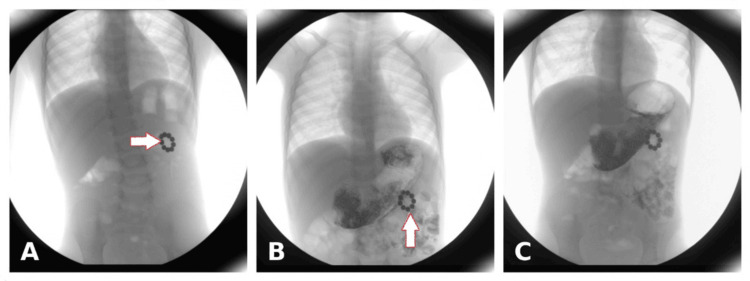
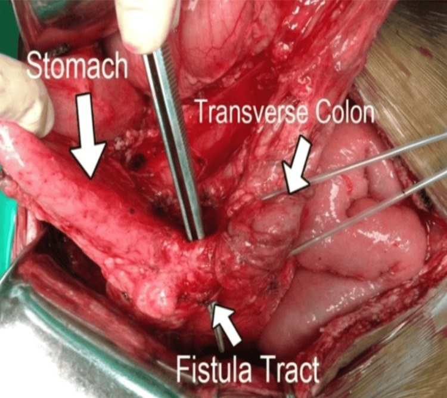
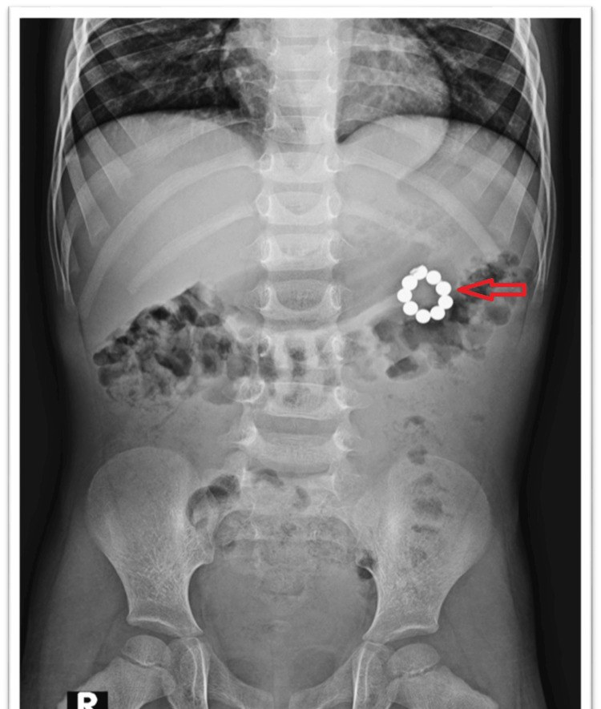
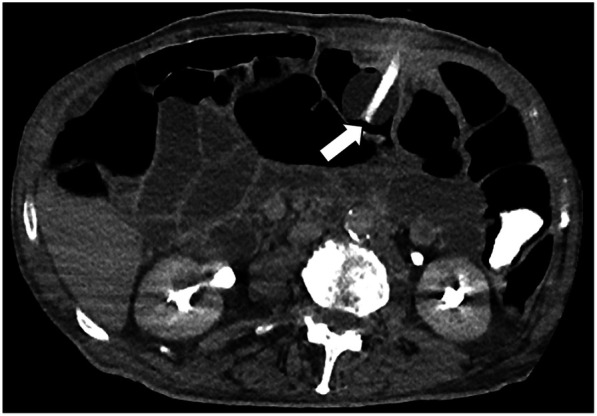

3080 — Rò dạ dày–đại tràng ở trẻ / Gastrocolic fistula in children
Tags: pattern:duong-ro pattern:di-vat pattern:mat-vi-tri-ong vung:da-day vung:dai-trang vung:thanh-bung protocol:chup-ro-can-quang protocol:CT-bung protocol:noi-soi protocol:sieu-am
Mức chắc chắn (certainty): tổng hợp y văn (literature synthesis) — ghép 2 ca công bố có ảnh gốc (trẻ 4 tuổi sau nuốt nam châm — Kheya JN và cs., Cureus 2026, PMC13185078, CC BY 4.0; người lớn 83 tuổi rò ba nhánh sau thay ống mở thông dạ dày — Pittacolo M và cs., Front Surg 2025, PMC12672460, CC BY 4.0) với 1 tổng quan hệ thống về mở thông dạ dày ở trẻ (Ibrahim MK và cs., 2026, PMC13696405) và 1 ca trẻ 12 tuổi rò dạ dày–đại tràng lên (Ke M và cs., 2026, PMC13081263). Số nào nguồn không đưa thì ghi "chưa rõ", không bịa.
Bài này trả lời 4 câu hỏi của buổi trực có trẻ mang ống mở thông dạ dày: (1) Tiêu chảy ngay sau bơm sữa vài phút — dị ứng sữa hay rò vào đại tràng? (2) Chụp gì để chốt: cản quang qua ống, CT hay nội soi? (3) Thuốc hiện ở đâu thì gọi là rò, thuốc không hiện có loại trừ được không? (4) Khi nào rút ống theo dõi — khi nào mổ ngay? Khác với 1829 – nút bị vùi (nút chui vào thành, không có thông với đại tràng) và 1813 – rò da–dạ dày sau rút ống (rò ra da, không ra đại tràng): ở đây thức ăn đi thẳng vào khung đại tràng, gây tiêu chảy, nhiễm khuẩn và mất nước.
1. Tổng quan bệnh học – cơ chế hình ảnh
1.1 Vì sao đường rò gần như luôn là dạ dày – đại tràng NGANG
- Thành sau thân và hang vị nằm áp trực tiếp lên đại tràng ngang; giữa hai tạng chỉ có dây chằng dạ dày–đại tràng (gastrocolic ligament) — một lá mỡ–phúc mạc mỏng 1–2 mm ở trẻ nhỏ, không có lớp cơ chắn.
- Mô hoại tử do chèn ép chỉ cần hai bề mặt niêm mạc bị ép vào nhau trong vài ngày: thiếu máu cục bộ niêm mạc → loét → hoại tử xuyên thành cả hai phía → dính → đường rò.
- Vì vậy bản đồ vị trí rất hẹp: hang vị/thân dạ dày ↔ đại tràng ngang (nam châm, ống mở thông dạ dày), dạ dày ↔ đại tràng lên khi nam châm nằm ở góc gan, hiếm hơn dạ dày ↔ đại tràng sigma (rò ba nhánh sau mở thông dạ dày).
1.2 Ba cơ chế — và "cửa sổ thời gian" khác nhau
| Cơ chế | Bối cảnh | Thời gian tới rò | Vì sao |
|---|---|---|---|
| Iatrogenic – ống mở thông dạ dày (PEG/RIG/button) | Đặt ống, thay ống, hoặc nút trong tì vào thành | Ngày → nhiều tháng (thường phát hiện khi thay ống) | Nút/bóng nằm trong đại tràng (đặt lạc) hoặc tì mạn vào thành → loét do áp lực |
| Dị vật – nam châm | ≥ 2 nam châm ở hai quai khác nhau | Vài ngày → vài tuần | Hai nam châm hút nhau xuyên thành ruột, ép niêm mạc → hoại tử do áp lực |
| Viêm/u | Loét dạ dày–tá tràng, viêm tụy, ung thư (người lớn) | Tuần → tháng | Viêm xuyên thành + mô hoại tử dính vào đại tràng |
- Số liệu nền (bắt buộc thuộc): thủng đại tràng khi đặt ống mở thông dạ dày 0,1% (310/272.866 ca PEG) và 0,2% (390/190.851 ca RIG); tỉ lệ biến chứng chung 0,4–22,5% (PEG) so với 13–43% (RIG); tử vong 30 ngày sau PEG 9–10% nhưng tử vong do thủ thuật < 0,1%; tắc ống 20–45% — chính lần thay ống vì tắc là lúc đường rò "lộ diện" (PMC12672460).
- Ở trẻ, biến chứng nặng 0–3% khi mở thông dạ dày đơn thuần, tăng vài lần nếu kèm chống trào ngược hoặc ống hỗng tràng (PMC13696405). Rò dạ dày–đại tràng được xếp vào nhóm biến chứng nặng trong tổng quan này.
1.3 TẠI SAO thấy được trên từng phương thức (vật lý + mô bệnh)
- Chụp cản quang qua ống (fluoroscopy): thuốc tan trong nước đi theo đường ngắn nhất — nếu ống nằm trong đại tràng hoặc có đường rò, thuốc hiện các túi cùng (haustra), bờ phân đoạn, có dải cơ dọc trong vài giây đến 5 phút; dạ dày bình thường không có các dải này. Dấu chốt là hình dạng đại tràng, không phải "thuốc chảy xuống dưới".
- CT: thấy dải mô mềm nối hai tạng, khí/dịch trong đường rò, và bóng ống hoặc nam châm nằm trong lòng đại tràng — dấu hiệu "không thể cãi". CT không phụ thuộc dòng chảy nên vẫn dương tính khi đường rò đã bịt kín tạm thời.
- Nội soi: nhìn trực tiếp nam châm/nút xuyên qua thành và vết loét quanh đó — vừa chẩn đoán vừa lấy được dị vật nông.
- Vì sao cản quang có thể âm tính giả: đầu ống bít kín lỗ rò, phù nề làm đường rò xẹp, hoặc thuốc đi quá nhanh qua dạ dày xuống tá tràng mà không vào đường rò → âm tính không loại trừ.

Ba khung cản quang baryt dạ dày–tá tràng: (A, B) viên nam châm dạng chuỗi ở bờ cong lớn, tạo khuyết bóng và dày niêm mạc khu trú; (C) hành tá tràng bình thường. Hình ảnh này buộc phải nghĩ tới viên nam châm đã xuyên thành, không còn trong lòng dạ dày. Nguồn: Cureus 2026, PMC13185078, CC BY 4.0.2. Mẫu hình + chẩn đoán phân biệt theo vị trí và cơ chế (Gamut)
- Theo vị trí rò: dạ dày–đại tràng ngang (nhiều nhất: ống mở thông, nam châm) → dạ dày–đại tràng lên (nam châm ở góc gan; ca trẻ 12 tuổi PMC13081263) → dạ dày–sigma (rò phức tạp sau PEG) → tá tràng–đại tràng (loét/viêm tụy) → dạ dày–da (khác hoàn toàn: 1813).
- Theo cơ chế: (1) đặt lạc ống vào đại tràng; (2) áp lực mạn của nút/bóng; (3) dị vật từ tính; (4) loét/viêm/u; (5) sau mổ (miệng nối, dẫn lưu).
- Gợi nhớ 3M + I: Misplacement (đặt lạc ống), Magnet (nam châm), Malignancy/ulcer (u/loét), Iatrogenic (sau mổ, sau thay ống).
- Mẫu hình lâm sàng–hình ảnh đặc trưng: tiêu chảy ngay trong 5–30 phút sau bơm sữa, phân lỏng, có khi hơi thối, kèm ợ hơi phân, sụt cân, mất nước; phim bụng có thể bình thường.
3. Bảng so sánh phân biệt (ma trận đối chiếu)
| Thực thể (entity) | Hình ảnh điển hình | Chốt vào (rule-in) | Chốt loại (rule-out) | Gợi ý xác nhận |
|---|---|---|---|---|
| Rò dạ dày–đại tràng | Cản quang qua ống: thuốc hiện haustra trong ≤ 5 phút; CT: dải mô mềm nối dạ dày–đại tràng ± khí trong đường rò | Thuốc vào đại tràng + tiêu chảy ngay sau bơm sữa | Không có đường nối trên CT và cản quang âm tính lặp lại → nghĩ nguyên nhân khác | Cản quang tan trong nước → CT bụng có cản quang tĩnh mạch → nội soi |
| Đặt lạc ống vào đại tràng (chưa rò) | Bóng/nút trong lòng đại tràng, dạ dày không có ống; bơm nước vào bóng thấy bóng nằm ở khung đại tràng | Bóng ống trong đại tràng trên CT | Bóng trong dạ dày trên CT → loại | CT bụng; kiểm tra dịch hút ra (pH, phân) |
| Rò da–dạ dày (gastrocutaneous) | Thuốc thoát ra mặt da quanh lỗ mở, không vào đại tràng | Thuốc chảy ra ngoài qua lỗ mở | Thuốc vào đại tràng → không phải rò da | Chụp cản quang qua ống, đặt gạc đánh dấu |
| Tiêu chảy do công thức (osmotic/dumping) | Không có đường rò; tiêu chảy 30–120 phút sau ăn, liên quan nồng độ/thể tích | Giảm khi pha loãng/tăng thời gian bơm | Tiêu chảy < 5 phút sau bơm + ợ hơi phân → nghĩ rò | Thử công thức, theo dõi; cản quang khi nghi ngờ |
| Nhiễm trùng/áp-xe quanh lỗ mở | Mô mềm dày quanh lỗ mở, không có đường nối với đại tràng; có thể có dịch | Đau, đỏ, chảy mủ tại lỗ mở | Có đường nối dạ dày–đại tràng → rò | Siêu âm mô mềm, CT |
| Thủng đại tràng đơn thuần | Khí tự do, dịch tự do, viêm phúc mạc lan tỏa; không thấy đường rò | Khí ngoài lòng + phản ứng thành bụng | Khí tự do lượng nhiều + sốc → thủng, không chờ cản quang | CT bụng cấp cứu, hội chẩn ngoại ngay |
| Viêm dạ dày–ruột nhiễm trùng | Ruột non/đại tràng dày thành lan tỏa, không khu trú; không có bóng ống lạc | Sốt, nôn, tiêu chảy cấp, dịch tễ | Tiêu chảy chỉ sau bơm sữa, kéo dài nhiều tuần → nghĩ rò | Cấy phân, theo dõi; hình ảnh khi không điển hình |

Đường rò xơ dày nối thành sau hang vị với đại tràng ngang; mô quanh đường rò viêm, xơ — dấu hiệu của quá trình áp lực mạn chứ không phải thủng cấp. Nguồn: Cureus 2026, PMC13185078, CC BY 4.0.3.1 Ba dấu hiệu "đọc đúng thì chốt" — và ba dấu hiệu dễ đọc sai
- Đọc đúng: (1) haustra khi bơm thuốc qua ống; (2) bóng ống trong đại tràng trên CT; (3) nam châm nằm ngoài lòng dạ dày trên cản quang/CT.
- Đọc sai: (1) thuốc xuống tá tràng–hỗng tràng non bị gọi là "đại tràng" (thiếu haustra, thiếu dải cơ dọc); (2) khí trong mô mềm quanh lỗ mở bị gọi là "khí tự do" (khí tự do phải ngoài lòng ruột, dưới hoành và di chuyển khi đổi tư thế); (3) bóng ống bị xẹp trên CT bị bỏ qua — luôn so với thành dạ dày để xác định bóng nằm ở tạng nào.
4. Protocol chụp + quyết định xử trí
4.1 Trình tự hình ảnh (khi trẻ có ống mở thông dạ dày và nghi rò)
- Ngừng bơm sữa ngay, đặt sonde dạ dày giải áp, bù dịch; không bơm thêm qua ống đang nghi lạc.
- Chụp cản quang tan trong nước qua ống: iohexol 180–300 mgI/mL; 5 mL nếu < 1 tuổi, 10 mL trẻ lớn; tư thế thẳng + nghiêng, chiếu liên tục 1–5 phút, chụp muộn tới 10 phút. Không dùng baryt khi nghi thủng/rò.
- CT bụng–chậu có cản quang tĩnh mạch, lát 1–2 mm, thì tĩnh mạch cửa; thêm cản quang trực tràng khi cần chứng minh thông thương. Tìm: dải nối hai tạng, khí/dịch trong đường rò, bóng ống trong đại tràng, khí tự do, áp-xe.
- Nội soi dạ dày khi cản quang/CT chưa chốt hoặc để lấy nam châm nông.
- Siêu âm chỉ để tìm dịch/áp-xe quanh lỗ mở — không dùng để loại trừ rò.
4.2 Ngưỡng và lựa chọn điều trị
- Ổ rò nhỏ (< 1 cm), không nhiễm trùng, không tắc ruột: có thể nhịn ăn + nuôi tĩnh mạch + kháng sinh (phủ kỵ khí) và theo dõi 1–2 tuần; một phần đóng kín tự phát khi đường rò chưa biểu mô hóa.
- Ổ rò lớn, xơ dày, có triệu chứng kéo dài, hoặc thất bại nội khoa: mổ — cắt đường rò, đóng dạ dày hai lớp, đóng hoặc cắt nối đại tràng; rò phức tạp nhiều tạng → cắt đại tràng + mở thông dạ dày mới (ca 3 nhánh, PMC12672460).
- Nam châm: lấy bằng nội soi nếu còn trong lòng; đã xuyên thành/dính hai quai → mổ (ca 4 tuổi: 5 viên lấy qua nội soi, 4 viên còn trong đường rò, khuyết thành 1–1,5 cm ở hang vị và đại tràng ngang).
- Đóng bằng clip/OTSC qua nội soi là lựa chọn cho lỗ nhỏ, thành mềm, không nhiễm trùng — chưa có số liệu ngẫu nhiên ở trẻ, cần chọn bệnh nhân.
flowchart TD
A[Trẻ mang ống mở thông dạ dày bị tiêu chảy ngay sau bơm sữa] --> B{Tuần hoàn ổn định và không có phản ứng thành bụng lan tỏa}
B -->|Có| C[Ngừng bơm sữa và chụp cản quang tan trong nước qua ống]
B -->|Không| D[CT bụng cấp cứu và hội chẩn ngoại ngay]
C --> E{Thuốc hiện haustra trong 5 phút}
E -->|Có| F[Chẩn đoán rò dạ dày đại tràng]
E -->|Không| G[CT bụng có cản quang tĩnh mạch]
G --> H{Thấy đường rò hoặc bóng ống trong đại tràng}
H -->|Có| F
H -->|Không| I[Theo dõi 24 đến 48 giờ và loại trừ nguyên nhân khác]
F --> J{Ổ rò nhỏ hơn 1 cm và không nhiễm trùng}
J -->|Có| K[Nhịn ăn nuôi tĩnh mạch kháng sinh và theo dõi 1 đến 2 tuần]
J -->|Không| L[Mổ cắt đường rò đóng dạ dày hai lớp và xử lý đại tràng]
4.3 Dự phòng — làm đúng thì gần như không gặp
- Xác nhận vị trí ống trước lần dùng đầu tiên: hút dịch pH ≤ 5,5 gợi ý dạ dày; nghe bụng có hơi là vô giá trị (âm thanh lan từ dạ dày sang đại tràng). Nghi ngờ → chụp cản quang trước khi bơm sữa.
- Khi thay ống: đo lại độ dài lỗ mở, không đẩy ống quá sâu, không bơm bóng khi chưa chắc trong dạ dày, và kiểm tra lại vị trí bằng cản quang nếu lần thay khó.
- Nam châm: tư vấn phụ huynh, cấm đồ chơi nam châm cho trẻ < 6 tuổi; nuốt ≥ 2 nam châm là chỉ định can thiệp sớm, không theo dõi thụ động.
5. Biến thể bình thường và cạm bẫy
- Biến thể bình thường: đại tràng ngang sa xuống thấp, chồng lên dạ dày trên phim tư thế đứng — dễ đọc thành "dạ dày nằm trong khung đại tràng"; hơi trong dạ dày lan sang đại tràng ngang khi bơm hơi qua nội soi.
- Cạm bẫy 1 — "ống còn đó nghĩa là ống đúng chỗ": đường rò có thể tồn tại nhiều tháng mà trẻ vẫn ăn được, đến khi thay ống thì đường rò bị xé và bệnh cảnh bùng lên (ca 83 tuổi, PMC12672460). Không bao giờ coi "nuôi ăn được" là bằng chứng ống nằm trong dạ dày.
- Cạm bẫy 2 — tiêu chảy sau bơm sữa bị quy cho "không dung nạp lactose/công thức": mốc thời gian < 5 phút và ợ hơi phân/thối là dấu hiệu rò, không phải dumping (dumping 30–120 phút).
- Cạm bẫy 3 — bỏ sót nam châm thứ hai: trên phim chỉ thấy một chuỗi ở dạ dày, viên còn lại đã ở đại tràng — luôn đếm đủ số viên phụ huynh mô tả, và chụp lại toàn bộ bụng–chậu.
- Cạm bẫy 4 — cản quang âm tính: đường rò bị nút/bóng bít hoặc phù nề xẹp → âm tính không loại trừ; nghi ngờ cao thì CT.
- Cạm bẫy 5 — "khí trong thành" vs "khí tự do": khí trong thành đường rò là dấu hiệu của rò; khí tự do dưới hoành mới là thủng ổ bụng — hai bệnh cảnh, hai thái độ xử trí.
6. Tự lượng giá — Blind Quiz
Ca 1 — Bé trai 4 tuổi, đau bụng từng cơn 3 ngày, không ai thấy nuốt dị vật.

- Gợi ý lâm sàng: đau quặn từng cơn, giảm tạm với thuốc chống co thắt, không sốt.
- Câu hỏi: dị vật là gì, nằm ở đâu, và vì sao xếp thành vòng? Cần làm gì tiếp?
Bấm để hiện đáp án
- Nhiều nam châm dạng chuỗi xếp thành vòng ở hạ sườn trái — các viên hút nhau thành chuỗi, không phải "một dị vật tròn".
- Xếp vòng = các viên đã bám vào nhau qua thành ruột, không còn tự do trong lòng.
- Việc tiếp theo: cản quang tan trong nước xác định viên có còn trong lòng dạ dày hay đã xuyên thành; nội soi lấy phần nông, chuẩn bị mổ.
- Nguồn: Cureus 2026, PMC13185078, CC BY 4.0.
Ca 2 — Cùng bệnh nhi, cản quang dạ dày–tá tràng trong ngày.
- Câu hỏi: viên nam châm còn trong lòng dạ dày không? Dấu hiệu nào nói "đã xuyên thành"?
Bấm để hiện đáp án
- Viên nam châm tạo khuyết bóng ở bờ cong lớn kèm dày niêm mạc khu trú — nằm ngoài lòng dạ dày, đã xuyên thành.
- Nội soi lấy được 5 viên; 4 viên còn lại nằm trong đường rò → mổ: đường rò giữa thành sau hang vị và đại tràng ngang, khuyết thành 1–1,5 cm mỗi phía.
- Nguồn: Cureus 2026, PMC13185078, CC BY 4.0.
Ca 3 — Cụ ông 83 tuổi, Parkinson, thay ống mở thông dạ dày vì tắc; hôm sau đau bụng và tiêu chảy.

- Câu hỏi: bóng ống nằm ở tạng nào? Vì sao đau bụng xuất hiện sau khi thay ống?
Bấm để hiện đáp án
- Bóng ống đã bơm nằm trong lòng đại tràng ngang — ống đặt lạc vào đại tràng khi thay bằng đường cản quang.
- Đường rò dạ dày–đại tràng đã có từ trước (do thủ thuật ban đầu), được ống cũ "giữ kín"; khi thay ống, đường rò dehisce → đau bụng, tiêu chảy, viêm phúc mạc hóa học.
- Mổ: ba đường rò (dạ dày–ngang, dạ dày–sigma), cắt đại tràng + đóng dạ dày hai lớp + mở thông dạ dày mới; ra viện ngày 8.
- Bài học: thay ống ở bệnh nhân có tiền sử thay ống khó phải kiểm tra vị trí bằng cản quang, không dựa vào "bơm thấy trơn".
- Nguồn: Front Surg 2025, PMC12672460, CC BY 4.0.
Bài liên quan chéo
- 600 – Tổng quan Nhi khoa
- 1829 – Nút bị vùi sau mở thông dạ dày (cùng thiết bị, khác cơ chế)
- 1813 – Rò da–dạ dày sau rút ống (rò ra da)
- 1805 – Rút ống mở thông & cai nuôi ống
- 083 – Nuôi ăn qua sonde
- 160 – Bụng cấp ở trẻ (khí tự do, thủng tạng rỗng)
Ảnh
images/3080_ro-da-day-dai-trang_XR_PMC13185078.jpg— phim bụng thẳng, nam châm xếp vòng — Cureus 2026, PMC13185078, CC BY 4.0.images/3080_ro-da-day-dai-trang_chup-can-quang_PMC13185078.jpg— cản quang dạ dày–tá tràng 3 khung — cùng bài, CC BY 4.0.images/3080_ro-da-day-dai-trang_mo_PMC13185078.jpg— đường rò trong mổ — cùng bài, CC BY 4.0.images/3080_ong-trong-dai-trang_CT_PMC12672460.jpg— CT: bóng ống trong đại tràng ngang — Front Surg 2025, PMC12672460, CC BY 4.0.- Chi tiết nguồn + giấy phép từng ảnh:
images/CREDITS.md.
Không dùng để chẩn đoán độc lập khi chưa có người hướng dẫn.